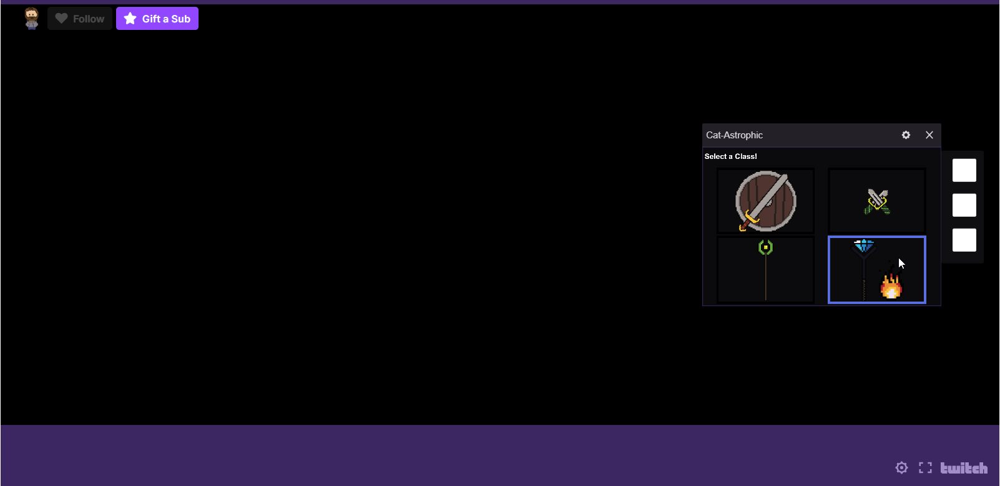
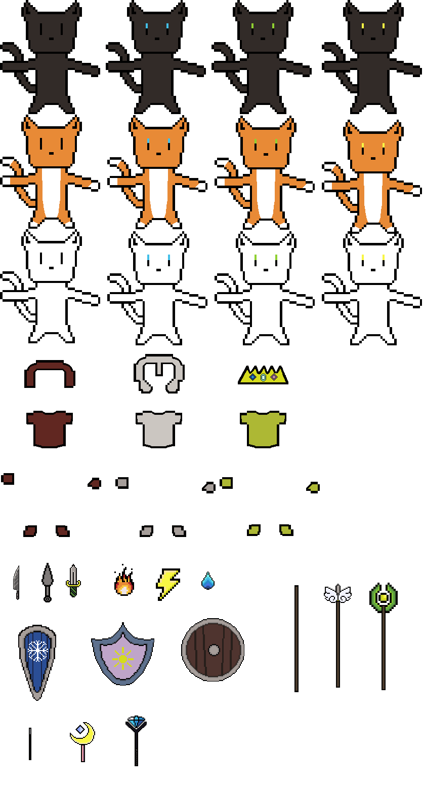

Cat Game
Taking Twitch Chat UX Interaction To the Extreme
This article is a continuation of the Twitch project. To recap that project, a series of mods, emulators, chat bots, and manipulating keystrokes allowed me to create a method in which a chatbox on
Twitch's website to interact with video games directly and indirectly. The Cat Game project is the logical extreme of this sentiment. In the other project, I used pre-existing games to interact with
so my next direction involved creating my own video games where the only direct way to play this game was through the chatbox on Twitch.
In order to accomplish such an interesting concept, a lot of various features offered on Twitch needed to be utilized and the game had to be specifically geared to be on this platform. First, let's get
into what the game was. Given the platform being a open chatbox to the public, I settled on it being an MMO, or Massive Multiplayer Online game. MMO was the easiest genre to select. The game was to also become
an RPG with a lot of the classic elements, tank, healer, and damage-dealer (a.k.a. DPS) with some elements of a clicker/idle game. The latter of the two genres, clicker/idle, was selected due to the nature
of how the users would interact with the game. To have, theoretically, an infinite amount of users with their own character, progression would have to be individualized and tied to tasks they did. This would
prevent the users from being able to control characters in the traditional up, down, left, right sense. The messages in the chatbox would give the users a point value which they could then use to upgrade their
character. Upgrades would be purchased in a small UI designed specifically for Twitch, but that will be elaborated on later. The user was able to select which class (tank, healer, DPS) they wanted to be, level that
character, select items off of a skill tree, upgrade equipment, and customize their character. These characters were later established to be cats due to the fact that I have two kittens and have an affinity to cats.

With the basic game logic set, the problem then became how this can be accomplished through the Twitch platform. The basic scoring structure was fairly simple. I set up a database that would keep all of the users
based on their user IDs and usernames and tally their scores. There was a chat bot that would accompany this database that would directly run the queries that wrote to the database in batches. I had it run queries in
batches at a set interval as I did not want the server to be pinged at an excessive rate. The real challenge, now, was displaying everything to the users. A while ago, Twitch's website released what they called
"extensions" which were placed by the Twitch channel owner for the chatters to use. They would then see a mini website appended to the video player that they can then interact with. This "extension" format was
precisely what I was going to use to display the upgrade and customization UI. The extension would read in based on the particular user that was logged into Twitch and display for them their own character. They
could then choose all of the options they wanted through this little tool.
Last, but certainly not least, the main gameplay loop was to be created. Since this was a MMO Idle RPG, the gameplay would be able to be resolved in ticks, or operations based on a timed interval. All of the
classes would have separate skills that operated slightly differently and interacted with the main gameplay in their own fashion. The main gameplay would be a broadcast of the website that held all of the characters
that were currently in the chat box and they would be faced with a boss character. There was a combined DPS, or damage per second, counter at the top that showed the cumulative damage being done that would slowly take
down the monster. Unfortunately, this was as far as I got on the project. A lot of time was spent working on the assets and the gameplay loop, but the extensions did not seem to operate individually but only based on the
the person broadcasting. I worked hard to try to individualize it for each chatter, but never cracked the code and ultimately dropped the project. I would love to get back to it at some point as I am hopeful that either
I missed something or Twitch implemented something to be more individualized.
